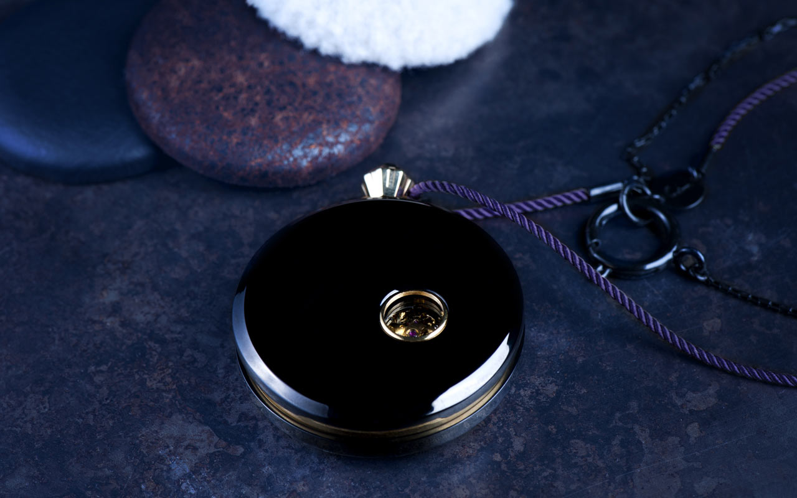
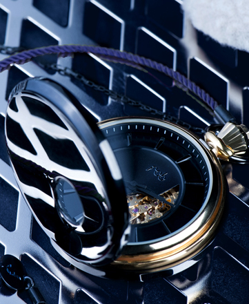

accueil
nextDécouvrez le site
-
a propos
prev next -
concept
fob est une marque de montres de gousset et accessoires dédiés, lancée à Paris en 2012.
Imaginée par une équipe jeune, inspirée par l’héritage de cet objet légendaire tombé en désuétude, fob réinvente la montre de gousset.
fob puise dans la tradition de l’horlogerie l’exigence d’un savoir-faire et dans le design une élégance décalée, pour lancer une montre de gousset unique et résolument moderne.
fob assortit les époques et les influences artistiques et donne naissance à des produits alliant élégance, fiabilité et originalité. Les montres fob sont conçues et assemblées dans les ateliers d’horlogerie de Paris. A travers le choix d’un mask – verso interchangeable – aux matériaux et couleurs originaux, fob fait de chacune de ses montres un produit unique. Pour homme et femme, en sautoir, dans une poche, de pantalon ou de veste, fob repense le port de la montre et en fait un accessoire de mode précieux, subtil et impertinent. -
ou trouver
fobDiamantissimo - France
Boutique Saint-Germain-des-Prés
28, rue du Four 75006 Paris France
+33 1 42 22 66 31
Désert Nice - France
9, rue Alphonse Karr 06000 Nice France
+33 4 93 16 17 10
Désert Lille - France
15, rue Clef 59800 Lille France
+33 3 28 07 97 56
Clio - Pays-Bas
11, Sint Amorsplein 6211 GW Maastricht Pays-Bas
+31 43 3250802Espace Chania - Suisse
46, rue de Rive 1260 Nyon Suisse
+41 2 29 90 07 80 -
presse

Dossier de presse 2012
Soblacktie
20 Septembre 2012
Fashion Daily News
29 Mai 2012C+ accessoires
N° 146 Mars 2012
-
montres
prev next -
origines
Dans les poches des hommes et des femmes pendant plus de quatre siècles, la montre de gousset, au-delà de sa fonction, était un objet cher à son propriétaire. Disparu de l’usage commun au début du XXème siècle, fob, en s’inspirant de l’héritage de cet objet mythique, crée la nouvelle génération de montres de gousset françaises.
Les montres fob se distinguent par leur facture d’exception alliant élégance, fiabilité et originalité. Conçues et assemblées dans les ateliers d’horlogerie de Paris, elles restent fidèles à une tradition et à un savoir-faire.
S’ajoute à la fiabilité des produits fob, un concept unique et innovant, l’opportunité de personnaliser sa montre de gousset, à travers le choix d’un mask interchangeable, aux matériaux et couleurs originaux. Avec ses courbes d’inspiration Art déco et son design épuré, The Rehab, la première collection fob, fait de la montre de gousset un accessoire de mode précieux, subtil, impertinent. -

- 


- 

the rehab
CommanderThe Rehab, la première montre fob, rend hommage à l’élégance éternelle de la montre de gousset. Son air Art déco, ses lignes épurées, son élégante sobriété, jouent le contraste des époques et misent sur la noblesse et la singularité des matériaux.
The Rehab est une montre d’exception. Conçue et assemblée à Paris dans la plus pure tradition horlogère, elle intègre un mouvement mécanique automatique, gage de qualité et de précision.
Des masks – versos interchangeables – ont été imaginés pour habiller la montre The Rehab d’une touche décalée. The Rehab est une montre de gousset unique : un accessoire fétiche au design original.

-
masks
prev next -
savoir faire
Les montres fob visent l’exception, l’inédit. Conçues et assemblées dans les ateliers d’horlogerie de Paris, elles restent fidèles à un savoir-faire et sont réalisées dans la plus pure tradition horlogère.
Chaque mask est confectionné à la main, par un prestigieux artisan gainier parisien, qui sélectionne pour fob des matériaux d’exception. -
Classiques
CommanderLes quatre masks classiques et intemporels en cuir coloré personnalisent la montre The Rehab avec élégance et subtilité. Bleu saphir, vert malachite, violet améthyste ou noir pur métamorphosent la montre The Rehab au gré des désirs et des fantaisies.
-
limitees
CommanderGaluchat, fourrure, cuir havana vintage ou exotique, les matières et textures de nos masks édition limitée explorent le contraste et le décalage, détournant les codes classiques de l’horlogerie haut-de-gamme, pour faire de The Rehab un accessoire unique et audacieux.


-
artistes
prev next -
collaborations
fob réinvente la montre de gousset, en l’inscrivant dans un univers singulier, moderne et artistique.
Grâce à son concept de masks, fob offre un espace de liberté à des artistes, qui adhèrent à l’univers de la marque et souhaitent l’enrichir de leurs propres influences et inspirations. -
artistes fob
Nasty
Nasty découvre le graffiti à la fin des années 80. Précurseur, il contribue à importer à Paris cet art New-yorkais.
Son style singulier, fait de lettres simples et de couleurs acidulées, a fait sa renommée. Le métro parisien, avec ses trains, ses plaques émaillées ou ses plans, est très vite devenu son terrain de jeu de prédilection.
Aujourd’hui, c’est toujours dans cet esprit, et sur ces mêmes supports, qu’il expose ses œuvres dans des galeries d’art.
Pour fob, Nasty réinvente The Rehab dans un esprit très urbain, en restant fidèle, dans les formes et les couleurs, à son style. Chacun des Masks qui habille la série limitée Nasty est issu d’une œuvre exclusive de 50 pièces, réalisée à la bombe dans les rues de Paris.
En savoir plus sur Nasty
Thomas V
Thomas V est un jeune artiste et joaillier, qui réalise et confectionne ses bijoux à la main, depuis son atelier parisien. Sensible aux formes et aux jeux de superposition, Thomas V façonne des matériaux bruts, or, laiton, argent ou encore métal chirurgical, pour créer des bijoux simples, élégants et énigmatiques.
Pour cette première collaboration avec fob, Thomas V transforme la montre The Rehab, en travaillant la montre en laiton dans la matière, pour créer une montre de caractère, brute et élégante.
En savoir plus sur Thomas V
-
contact
prev -
-
mentions legales
FOB, société par actions simplifiée au capital de 10 482,22 €, a son siège social situé à ESSEC Ventures Avenue Bernard Hirsch Cergy Pontoise,France.
FOB est immatriculée sous le numéro R.C.S. PONTOISE 534 864 608, TVA intracommunautaire FR 48 534864608.
Téléphone : +33 (0)6 69537569
Le directeur de la publication est Monsieur Aurélien Caron.Propriété intellectuelle :
Tous les éléments du site de FOB sont et restent la propriété intellectuelle et exclusive de FOB Personne n’est autorisé à reproduire, exploiter, rediffuser, ou utiliser à quelque titre que ce soit, même partiellement, des éléments du site qu’ils soient logiciels, visuels ou sonores.
FOB n’assure aucune garantie, expresse ou tacite, concernant tout ou partie de son site Internet. En aucun cas, FOB ne peut être tenue pour responsable d’un quelconque dommage direct ou indirect, qu’elle qu’en soit la nature, découlant de son site Internet. -
credits
Photos :
Maxime de Pommereau
FOBSite :
Les 84 ™